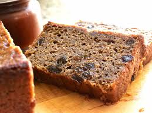

Recipe Menu
Apple Butter Bread recipe

Tasty Bread
Sweetest bread you've ever had!
Ingredients
- 1.5 cups all-purpose flour
- 3/4 teaspoon baking soda
- 0.5 teaspoon baking powder
- 0.5 teaspoon salt
- 0.5 teaspoon ground nutmeg
- 1/4 teaspoon ground cloves
- 1/3 cup butter, softened
- 1 cup sugar
- 1 egg
- 1.25 cups apple butter
- 0.5 cup raisins
- 0.5 cup chopped walnuts
Steps:
- Preheat the oven to 350 degrees F (175 degrees C). Grease an 8x4-inch loaf pan.
- Mix flour, baking soda, baking powder, salt, nutmeg, and cloves in a bowl.
- Beat butter and sugar with an electric mixer in a separate large bowl until smooth. Add egg and apple butter; continue beating until smooth. Mix in flour mixture until just incorporated. Fold in raisins and walnuts, mixing just enough to evenly combine. Pour into prepared loaf pan.
- Bake in the preheated oven until a toothpick inserted into the center comes out clean, 40 to 50 minutes. Cool in the pan for 10 minutes before removing to cool completely on a wire rack.